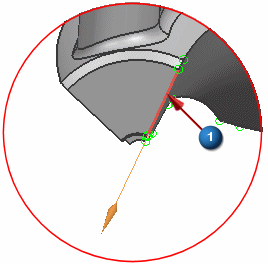
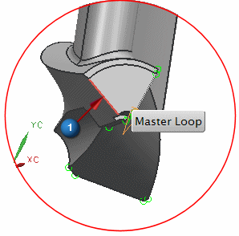

Create a 2D mesh dependency
For cyclic symmetry, the radial, tangential, and axial displacements relative to the axis of rotation are identical at equivalent positions on the repeated faces (the faces created during the trimming operation). To model this behavior:
-
Create a 2D dependent mesh on the repeated faces. Doing so locates the nodes on each face at equivalent positions.
-
Use the 2D dependent mesh to seed a 3D mesh of the body.
-
Change the nodal displacement coordinate system to cylindrical.
-
Couple the degrees of freedom (DOF) for each pair of equivalently positioned nodes lying on the repeated faces.
 2D Dependent (Mesh group)
2D Dependent (Mesh group)
-
Type
Symmetric

-


-
Rotate the part to view the opposite face.
-

-

-

-
Verify that the arrows on the master and target edges are pointing in the same direction (as shown).

If the arrows do not point in the same direction, reverse the direction of one of them using
 Flip Direction.
Flip Direction.
-
Reference CSYS
Cylindrical
-
CSYS of Object (Specify CSYS)
-

-
Mesh Type
Free Mesh
-
OK
The 2D Mesh dialog box appears. Do not close it.